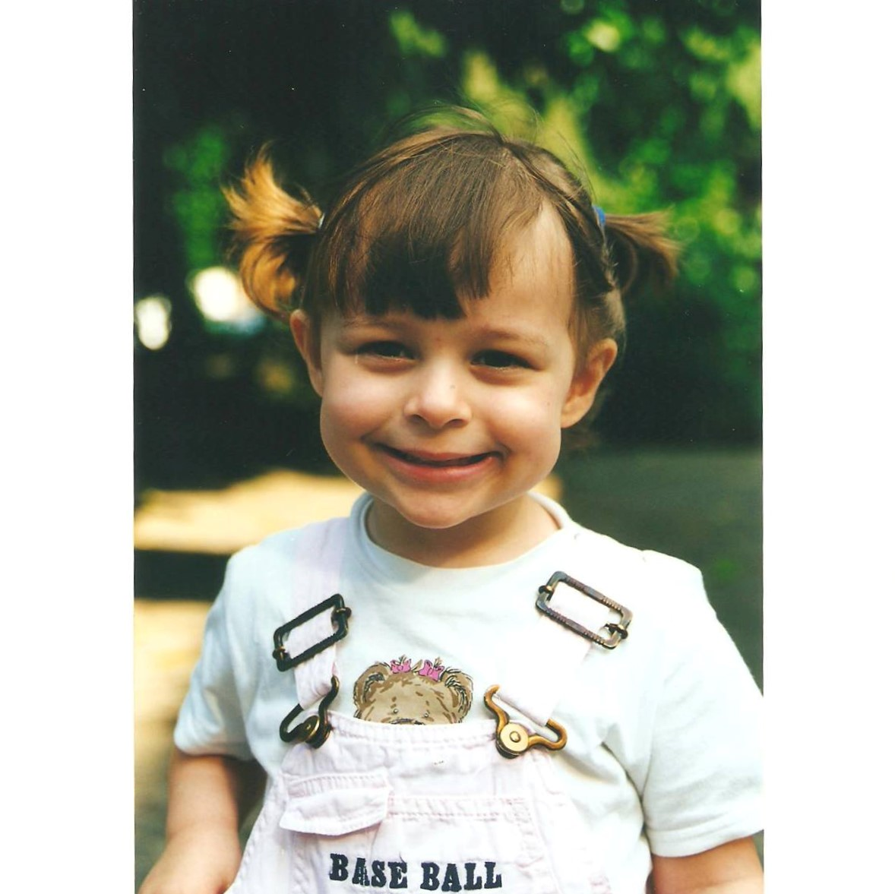
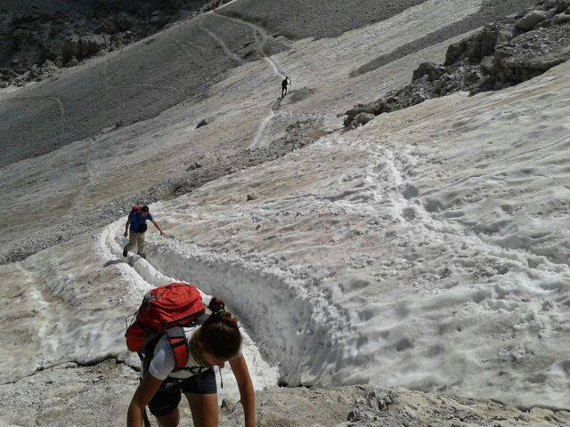
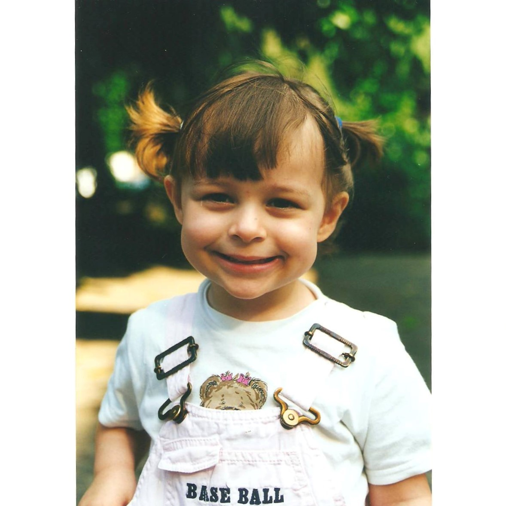
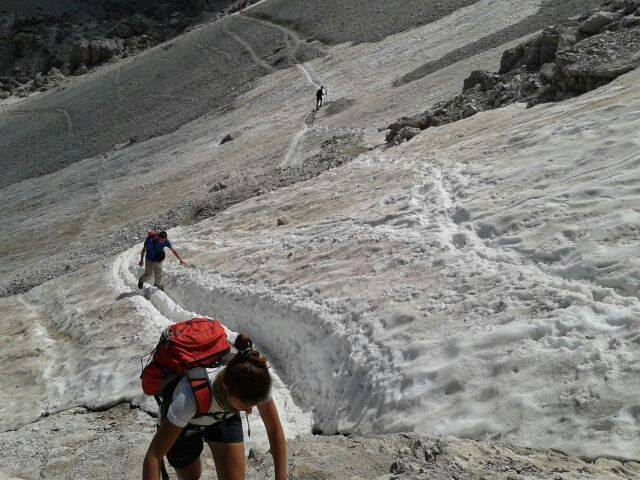
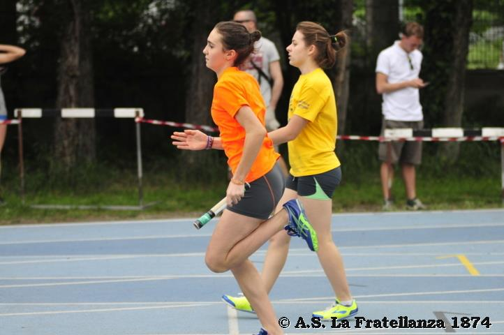
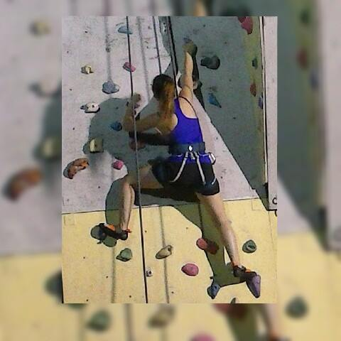
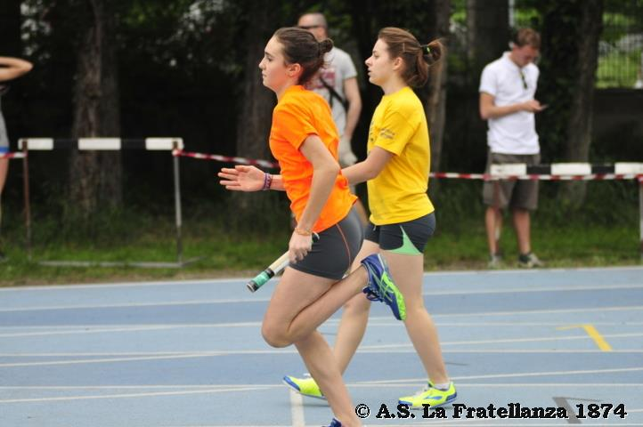
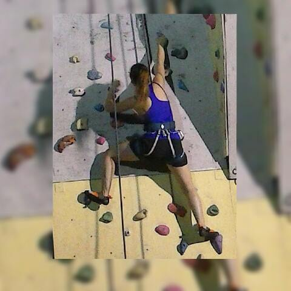

 



Mi chiamo Cecilia Sgubbi e questo è il mio sito web.
Vi avverto, per vedere cose un po' più serie (non più di tanto) vi basta scorrere verso il basso.
In questa sezione scriverò di me e di quel poco che sono in grado di raccontare. Mi trovo qui per caso a programmare la mia pagina web, lo stesso caso che mi ha portata ad iscrivermi a Design della Comunicazione. Facoltà strana, direte voi. Cosa si studia? La verità è che non ne sono sicura nemmeno io. Guardo i miei compagni di corso e vedo che sanno programmare, sono fotografi provetti, animano video incredibili. Mi chiedo cosa mi abbaia convinto che questa fosse la strada giusta per me. Io che fino a pochi mesi fa non avevo idea di che font fosse il Bodoni o chi fosse l'autore della sedia Barcellona (o di cosa fosse la sedia Barcellona). Ho sempre apprezzato la bellezza. Ho apprezzato la bellezza di film, fotografie, opere d'arte, ma anche della natura, della potenza di un atleta che corre, di una bella storia, dei fiori... no, dei fiori mai, i fiori sono bruttissimi. Mi piace la semplicità, anzi, mi piace l'efficacia, il minimalismo.
La parte filosofica è finita. Felici, vero?
Sono nata l'1 gennaio dell'ormai lontano 1998. Sì, proprio il primo giorno dell'anno, quando tutti quelli che conosco sono in vacanza o a letto distrutti dalle feste di Capodanno. Abito a Imola, proprio a metà tra l'Emilia e la Romagna. Alzi la mano chi pensa che Imola sia in Emilia. Avete perso. Di preciso Imola si trova in Romagna, perché lo sanno tutti che il vero confine è il fiume Sillaro e non il Rio Sanguinario come sostengono gli emiliani. Il mio cuore è romagnolo, ma il cervello si distanzia con forza da questa posizione e si definisce emiliano. Ho due fratelli, uno nato nell'ancora più lontano 1994 (quasi durante le Guerre Puniche) e uno nato esattamente il mio stesso giorno, il mio stesso mese, il mio stesso anno, ma due minuti prima di me. Si chiamano rispettivamente Matteo e Daniele.
La mia grande passione è il cinema. Io e la bigliettaia siamo ormai grandi amiche. Amo i film di Christopher Nolan, li amo da prima che andasse di moda. Il mio preferito è Memento. Nolan fa quei film che ti incasinano il cervello, proprio quelli che piacciono a me. Faccio fatica a fare una stima di quanti film io abbia visto nella mia vita, con le serie tv invece potete controllare voi stessi qui.
Mare o montagna?
Mar...montagna! Anzi no, mare. Entrambi.
Diciamo che se me l'aveste chiesto a 13 anni, quando l'unico mare che conoscevo era quello di Pinarella di Cervia, vi avrei certamente risposto "Montagna!". Negli ultimi anni però ho allargato gli orizzonti addirittura fino a Marina di Ravenna.
Amo lo sport. Proprio in questo momento, sto guardando Portogallo-Spagna mentre programmo. Più di qualsiasi cosa mi paice correre. Sì, mi piacevano anche le campestri che ti facevano fare alle scuole medie. Quelle gare in cui se non sapevi nuotare non sopravvivevi, e quelle da cui dovevi tornare completamente coperto di fango, altrimenti non eri nessuno. La sensazione che ti dà una bella corsa, una di quelle in cui arrivi in fondo con la lingua che pulisce le strade della Bovisa come nessuno ha mai fatto prima, quella sensazione è impareggiabile. Anche se forse qualcosa di paragonabile c'è. Quella disciplina sportiva in cui ti leghi un filo tutto attorno al corpo, ti ricopri le mani di polvere bianca e cominci a salire su un muro di pietra. Ah, giusto, si chiama arrampicata.
Ho finito le sciocchezze da scrivere.
Qui sotto ci sono le cose un po' più "serie" a cui accennavo.